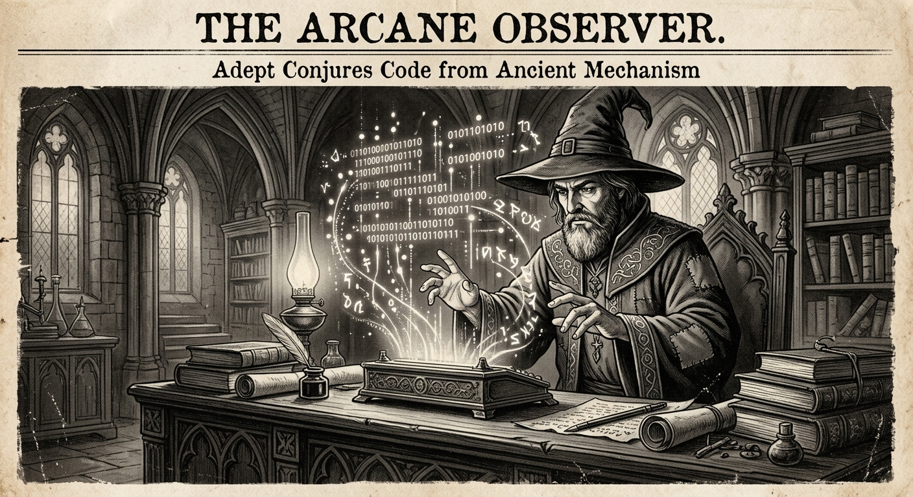

Morning Edition
6:00 AM CSTFinance & Markets
Trump Wants Private Equity and Crypto Accessible in 401(k)s — But There Are Risks
The Trump administration is pushing to allow private equity and cryptocurrency investments inside employer-sponsored 401(k) retirement plans. The New York Times reports that while advocates call it democratizing finance, critics warn of hidden fees, volatility, and retail investors bearing risks they may not fully understand.
— Source: The New York Times, April 23, 2026TSMC Debuts A13 Chip Technology at 2026 North America Symposium
Taiwan Semiconductor unveiled its next-generation A13 process node at its annual technology symposium, setting the stage for a new wave of faster, more efficient chips. The announcement reinforces TSMC's dominance as the backbone of global semiconductor manufacturing.
— Source: Taiwan Semiconductor / Reuters, April 23, 2026Bain Survey: Tech Services Betting Big on AI and Resilience
Bain & Company's latest tech services buyer survey reveals enterprises are accelerating AI investments while simultaneously building operational resilience — a dual mandate that's reshaping how companies spend on technology consulting and infrastructure.
— Source: Bain & Company, April 23, 2026World & US
Trump Reposts Anti-India Rant Over Birthright Citizenship Debate
President Trump reposted an inflammatory anti-India message amid ongoing debates over birthright citizenship policy, drawing sharp criticism from Indian media and diplomatic circles. The incident adds fuel to an already heated immigration discourse.
— Source: NDTV, April 23, 2026Democrats Warn Social Security Cuts Have Caused 'Customer Service Chaos'
Democratic lawmakers say recent staffing and budget cuts to the Social Security Administration have created widespread service failures for American seniors, with wait times skyrocketing and claims going unprocessed.
— Source: The Guardian, April 23, 2026
The Thursday Oracle: A Wizard Conjures Holographic Code From a Brass Terminal Beneath Gothic Arches.
"Sagittarius, Thursday demands precision — but your arrows were made for exactness. As a Rat-born Archer, you've been stockpiling ideas like acorns, and today one of them cracks open into something real. Mercury's quiet influence means the small detail you almost skipped? That's the one that matters. Debug your life the way you debug your code: patiently, with curiosity, not frustration. Someone nearby is paying closer attention than you realize. Let your work speak. It's louder than you think."— Thursday's Developer Chronicle
Sagittarius Horoscope
Today brings a surge of intellectual energy, Sagittarius. Your mind is sharp and hungry for new ideas — feed it with something challenging. A technical puzzle, a foreign language, a book outside your usual genre. As a Rat-born Archer, your natural cleverness is amplified today. Collaborative projects are especially favored. Share your wildest idea — the one you've been sitting on — and watch it gain traction. Lucky numbers: 7, 23, 31. Lucky color: Midnight Teal. ✨
— Source: Horoscope.com, April 23, 2026Tech & AI Highlights
-
TSMC A13 Process: The Next Leap in Chip Manufacturing
TSMC's A13 node promises significant performance and efficiency gains over the current N2 generation, with volume production expected in late 2027. The tech world is already buzzing about what this means for AI inference at the edge.
— Source: Taiwan Semiconductor, April 23, 2026 -
Bain: Enterprise AI Spending Shifts From Experimentation to Scale
Companies are moving beyond AI pilots and deploying production-grade systems at scale, with tech services spending projected to grow double digits through 2027.
— Source: Bain & Company, April 23, 2026 -
Trump Admin Pushes Crypto and PE in 401(k)s
The administration's latest retirement policy proposal would open 401(k) plans to alternative assets, marking the biggest shift in retirement investing rules in decades.
— Source: The New York Times, April 23, 2026
Active Reminders
- Build Oomi iOS and Android app
- Plaid Integration Research
- Connect Nemu to Notion
- Research VPN/proxy services
- Create security OpenClaw bot